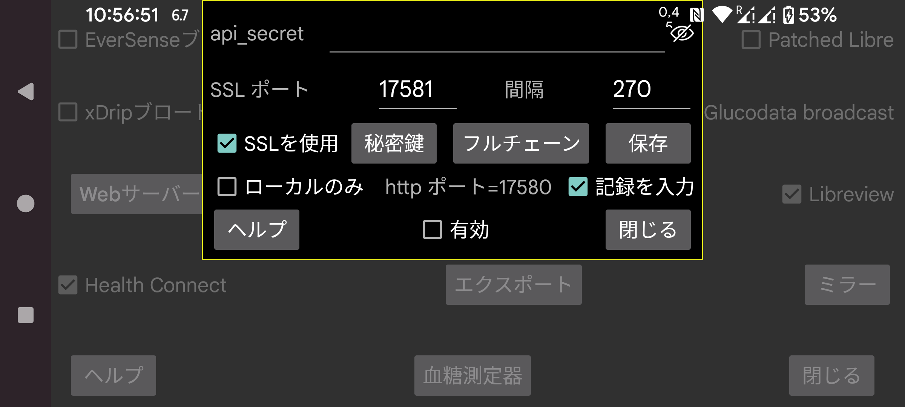

ar be de es fr hi ja nl pl ru sv tr uk uz zh en
Juggluco は、他のアプリが Juggluco から血糖値を受信できる Web サーバーを内蔵しています。xDrip ウォッチや一部の Nightscout アプリで使用できます。
xDrip Web サーバーを使用するように作られたアプリの利用は比較的簡単です。有効をチェックするだけです。その後、127.0.0.1 のポート 17580 で血糖値を受信できます。Nightscout サーバー URL: http://127.0.0.1:17580
また、一部の Nightscout フォロワーもこれを使用できます。「local only」が設定されていない場合、xDrip、Diabox、Windows Floating Glucose アプリ、Windows、Linux、macOS のウィジェット (Owlet) を http で使用できます。MacOS では Nightscout Menu Bar、Gluco Status、Gluco Tracker (すべて Apple Store 内) でも同様です。Nightscouter、LoopFollow (IOS)、Nightguard (IOS と WatchOS) でも http のみが必要です。
インターネット経由で Juggluco にアクセスしたい場合は、モデムからポートを転送する必要があります。参照:
https://www.makeuseof.com/tag/what-is-port-forwarding-and-how-can-it-help-me
左中メニュー → ミラー → 接続を追加 → ヘルプ
他の Nightscout フォロワーは https のみを使用しており、Juggluco にアクセスするために使用するドメイン名に対する認証された SSL キーが必要です。外部 IP に関連付けられたホスト名がある場合、Certbot 経由で無料で証明書を取得できます。外部 IP にホスト名がない場合は使用できません。https://www.freenom.com から無料のドメイン名を取得できます。試したのですが、数週間以内に通知なしにドメインを取り上げられ、再登録しようとすると有料になっていました。年間数ユーロでホスト名を購入できます(例: https://www.strato.nl/domeinnaam)。
Certbot をインストールし、モデムからコンピューターにポート 80 (http) を転送した後、次のように単純に押すだけです:
certbot certonly --standalone --preferred-challenges http -d myhostname
https://devpress.csdn.net/linux/62e7999e907d7d59d1c8cfd0.html 参照。
Certbot を使用した後、秘密鍵は /etc/letsencrypt/live/myhostname/privkey.pem にあり、フルチェーンは /etc/letsencrypt/live/myhostname/fullchain.pem にあります。「myhostname」は使用したホスト名です。
SSL 認証局からキーファイルを受け取った場合、それらを Juggluco に渡す必要があります。秘密鍵は「秘密鍵」を押して読み込み、フルチェーンは「フルチェーン」を押して読み込みます。
Android 間で血糖値を送信したいだけなら、Juggluco の ミラー機能(左中メニュー → ミラー)を使用する方が良いです。
Android アプリの AAPS、Diabetes:M、Nightwatch、Checkmate、Sugarmate (MacOS と IOS)、Xdrip4ios、Shuggah、Cockpit (IOS) には SSL が必要です。Nightscout サーバー URL として次を指定します:
https://hostname:port
hostname は Juggluco に与えた認証されたキーのホスト名、port はこの画面で指定したポート(デフォルト: 17581)に転送したポートです。
AAPS は Juggluco 7.3.0 以降で使えます。これには AAPS で NSClientV3 を選択し、次の設定を行う必要があります:
NS access token として、ここで指定した api-secret を使用する;
「Connect to websockets」を解除する;
「Synchronization」で、すべてのアップロードをオフにします。次のみオンにします:
Receive/backfill CGM data;
Receive Insulin;
Receive carbs;
Receive therapy events;
すべての「advanced settings」をオフにする。
以前に入力した記録より前に記録を挿入すると、AAPS が重複した治療を持つようになります。これは v3 インターフェースを Juggluco から v3 アップロードを受信する Nightscout サーバーで使う場合にも発生します。
AAPS が強制停止して再起動された後にのみ、AAPS がサーバーに治療を要求し始めることがあります。
Web サーバーは Linux コンピューター上でも実行できます。センサーに接続された Juggluco からのミラー接続からデータを受信します: https://www.juggluco.nl/Juggluco/cmdline。
別のスマートフォンは、ミラー接続経由または Nightscout フォロワーとして(例えば iPhone で)このサーバーに接続できます。この Web サーバーで動作しない Nightscout アプリがあれば、教えてください。少しの変更で動作させられるかもしれません。(IOS アプリの Nightscout と Nightscout X は特定の Nightscout サーバープログラム専用で、Juggluco では動作しません。)
api_secret: フォロワーがこの値を api_secret http ヘッダー要素に設定するように指定します。このシークレットは、フォロワーがこのシークレットを Nightscout トークンとして使用する場合や、SHA1 でエンコードされたシークレットで api-secret ヘッダーを使う場合にも機能します。Juggluco 7.1.15 以降は、api_secret を Nightscout サーバー URL のパスの最初の要素にすることもできます。xyz が api_secret で、http://hostname:port が Nightscout サーバー URL の場合、Nightscout サーバー URL として http://hostname:port/xzy を指定できます。
表示: シークレットを表示します。
ポート: https サーバーへの接続に使用するネットワークポートを指定します。デフォルトは 17581 です。
保存: シークレットまたはポートの変更を保存します。
SSL を使用: SSL (https) を使用します。SSL のためには、このサービスへの接続に使用するホスト名の秘密鍵とフルチェーンを与える必要があります。
秘密鍵: 秘密鍵を含むファイルを選択します。上記参照。
フルチェーン: フルチェーンを含むファイルを選択します。上記参照。
間隔: 血糖値間のデフォルトの最小間隔(秒)。通常は 270 秒です。リクエストは interval= オプションを提供してこの値を変更することもできます。https://www.juggluco.nl/Juggluco/webserver.html 参照
ローカルのみ: http サーバーには localhost (127.0.0.1) でのみアクセスできます。これは https には適用されません。
記録を送信: http://127.0.0.1:17580/api/v1/treatments?count=3 を使って入力された記録を受信できるようにします。(各ラベルでどう扱うかを指定する必要があります。以前は Libreview と同じでしたが、バージョン 4.18.0 以降は Libreview とこの Web サーバーで異なるカテゴリにラベルを配置できます。)このインターフェース経由で xDrip は Juggluco から記録を受信できます。xDrip では 2 つの方法でこれを行えます:
「Hardware Data Source」として、「Nightscout Follower」 を選択し、「Follow URL」として http://127.0.0.1:17580 を指定し、「Download Treatments」をチェックする。
別の Hardware Data Source、例えば Libre (patched app) を選択し、設定 → Cloud Upload → Nightscout Sync (REST-API) をオンにする。Base API URL として http://somekey@127.0.0.1:17580/api/v1/ を入力し、「Download treatments」をオンにする。Juggluco へのアップロードは不可能なので、これは治療をダウンロードするだけで、いくつかのエラーメッセージが生成されます。
「ローカルのみ」がチェックされていない場合、Juggluco を実行しているスマートフォンのホームネットワーク IP も使えます。また、モデムをそのスマートフォンの 17580 に転送するように設定すると、スマートフォンの外部 IP も使えます。スマートフォンにアクセスできるホスト名の秘密鍵とフルチェーンを Juggluco に与え、SSL を使用をオンにすると、ここで指定したポートと、http の代わりに https を使ったそのホスト名も使えます。
Diabetes:M に治療をアップロードしたい場合、Juggluco のデータを Libreview に送信して Libreview でデータを「Download Glucose data」で保存し、このデータを Diabetes:M で データ → Import from other sources → Freestyle でインポートするか、スマートフォンの外部ホスト名の認証されたキーを取得し、外部ソースとしてリンクで Nightscout を指定し、URL として https://yourhostname:Port を指定します(yourhostname は認証キーを受け取った Juggluco を実行しているスマートフォンのホスト名、Port はここで言及したポートです)。自動的に同期しないようなので、Diabetes:M で自分で同期を押す必要があります。
有効: Web サーバーが実行中。
Juggluco に実装されている Nightscout/xDrip Web サーバーコマンドの詳細については、https://www.juggluco.nl/Juggluco/webserver.html を参照してください。